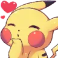
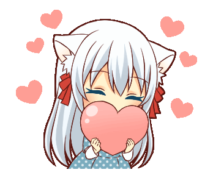

Hola mi niña hermosa este regalo lo hago por nuestro primer mes, la verdada estoy muy feliz de poder estar a tu ladito todo este tiempo, poder hablar contigo y divertirme a tu lado, la verdad es que te amo muchomucho y pos hice esto para demostrarte lo mucho que te amo, tambien lo hice porque me dijiste que te gusta que te hiciera cosas como esta asi que le puse mucho empeño, pero weno dejo hasta aqui con esto y revisa el resto de la pagina, espero te guste mucho.
Creo q sería bueno empezar por aquí ya que este fue uno de los juegos en los cuales comenzamos a jugar y a hablar, farmeamos un buen para el secreto que no me acuerdo cuál era pero siempre estuviste a mi ladito carreandome, la verdad aunque ese juego al final ya no me gustará y aparte está todo muerto jajajaja, disfrute mucho haber jugado contigo
Weno otro juego al que le tengo un buen de cariño porque me gustó en sus inicios y si me divertía mucho consiguiendo todo, farmear para conseguir a uryu, ywacho y al otro miado, pero una de las verdaderas razones porque la que más me gustó fue por la compañía que tuve en todos esos momentos de farm, una niña preciosa que farmeo conmigo, ya que todo ese farm se me hizo muy divertido porque no estaba solo y había alguien con la que me podía divertir, reír y pos jugar mucho tratando de conseguir lo mejor
Este si fue un juego en el cual me reí mucho y a la vez disfrute porque siempre tratábamos de llegar, pasar a la siguiente ronda y obviamente ganar, todo eso se me hacía muy divertido ya que aveces pasaba algo como un error de alguno o que alguien nos estorbaba jajajaja, pero lo disfrutaba mucho, estar contigo tratando de siempre ganar, viendo como en algún momento alguno se caía y no llegábamos, nos enojamos con algún furro y diciendo la siguiente es la buena jajajaja
Muerdeme el misterio jajajaj como me encanta ese nombre, este juego yo creo q si nos acercó mucho, ya que jugar con todos esos miados era bien divertido y nosotros que nunca nos matabamos y solo nos poníamos a bailar jajajajaj, fue muchas veces que reí en ese juego, como todos se mataban y nosotros hay bailando, ya en cierto punto hasta nos mataban rápido para que no durará tanto la partida jajaja
Uuf Minecraft si que fue otra cosa, ese juego si fue de los que más disfrute y poder jugarlo contigo fue lo mejor, como íbamos a explorar, conseguimos un camello el cual nunca le dimos nombre jajajaj, cuando buscamos un lugar bonito donde hacer nuestra casita bien bonita para los 2, todo eso lo disfruté demasiado ya que quería jugar mucho contigo y ese juego fue perfecto para eso
Weno eso fue todo espero que te gustará mi regalito por este mes mi amorcito precioso, todo lo que puse acá fueron cosas que realmente aprecio, ya que son momentos que pase con la mujer más preciosa del mundo y que es solo mía, espero poder pasar más momentos lindos a tu lado, hablar mucho y quiero conocerte aún más, conocer tu linda carita, tu preciosa voz, más de tus gustos, más de tu cuerpecito uwu, todo todo quiero conocer, espero seguir pasando buenos momentos contigo y que me sigas amando para siempre mi Jackie preciosa hermosa te amooooo mucho y feliz primer mes de muchos más que nos esperan
